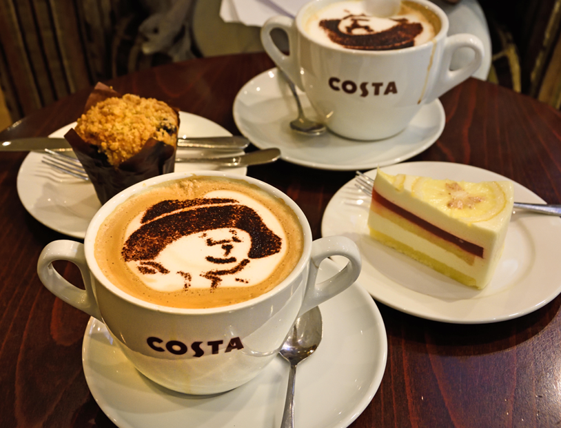

baristas
Our
baristas
The prestigious Barista of the Year competition shows the passion, talent, and
technical creativity of talented baristas from all over the world. This year, in 2023,
a contestant from Qatar won first place in a global competition at Costa Coffee
to recognize the world's best barista.
Celebrating
great coffee
Every year, we put our Baristas through their paces to find those that
are bringing our purpose to life and inspiring the world to love
great coffee.
With heats taking place in all of our global markets – UK & Ireland,
Europe, China and MEA region (Middle East, Africa and South East Asia) –
our competition culminates in a Champion of Champions final, which is
held in London and live streamed to a global audience.
As well as the pride that comes with being awarded Costa’s Champion
of Champions title, our overall winner takes home our coveted Barista of
the Year trophy, a 10-night holiday to a coffee-related destination, a
commemorative pin badge, apron, and shirt.

The ‘Barista of the Year’
competition has been running
for 15 years!
UK Barista of the Year 2022
Evie Ranson, who works as a Barista Maestro, at the
Costa Coffee store in Rotherham has been crowned
Costa Coffee’s UK Barista of the Year 2022. The 28
-year-old, who lives in Sheffield, has been working
for Costa Coffee for over eight years and impressed
the judges with her passion for coffee and creating
beautiful, crafted drinks. Congratulations Evie!
Coffee creativity
We also run a Latte Art competition in parallel, where our baristas show us their most creative, ingenious and downright beautiful, milky masterpieces. Entries are
whittled down by an internal judging panel and an external social media vote, to leave us with three Latte Art finalists. They will then showcase their creations at the
Champion of Champions event, where the audience vote for their favourite design.
Why is this competition so important to us? Because we want to further our commitment to crafting great tasting coffee, to celebrate the art of coffee making and
to champion the incredible work of the people who help to make Costa Coffee the Nation’s Favourite* coffee shop.
Feeling inspired?
Join our team
Follow the link below to check our Careers portal for the latest
opportunities.
Join the team>
**The open text question “What is your favourite branded coffee shop chain?” was asked to an independent panel of over 5,000 UK coffee shop consumers with
51.4% answering Costa Coffee. See here for full terms and conditions.